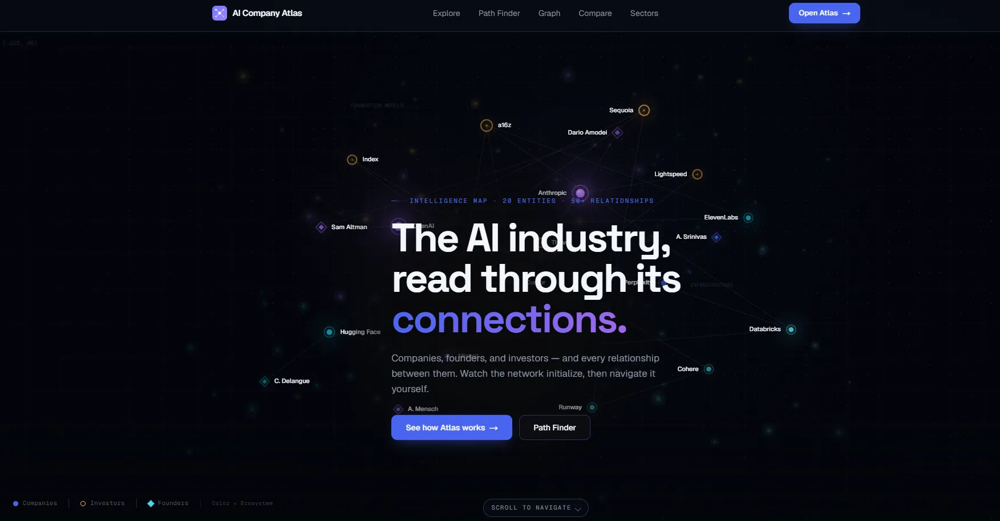
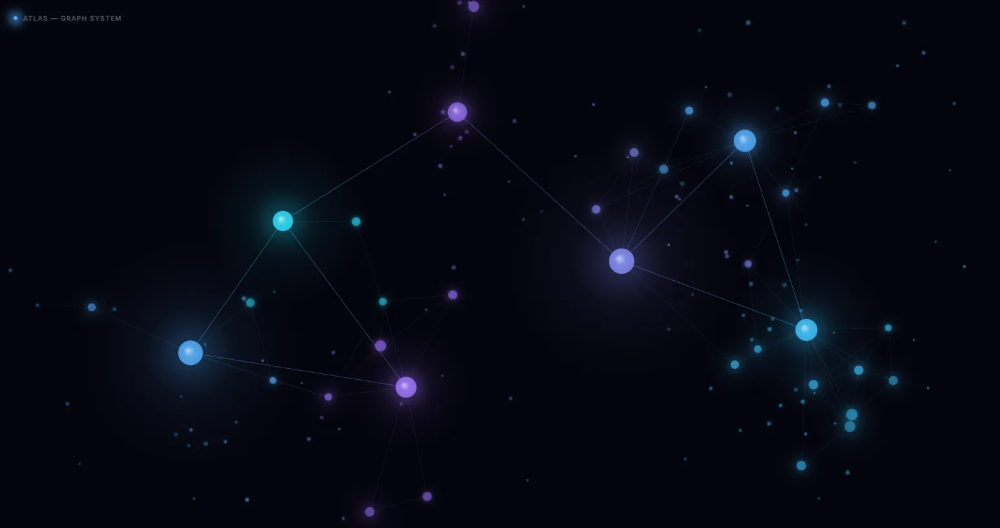
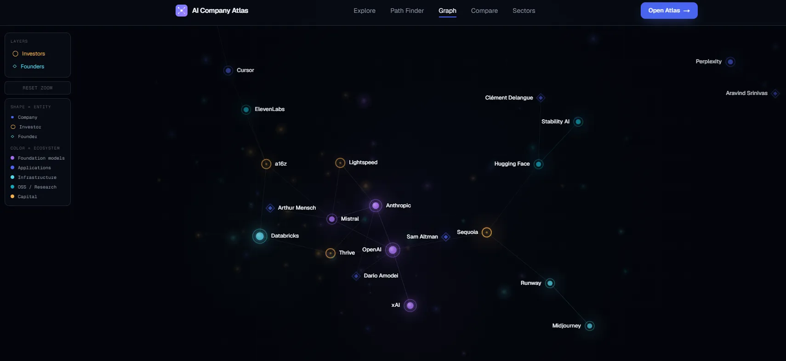
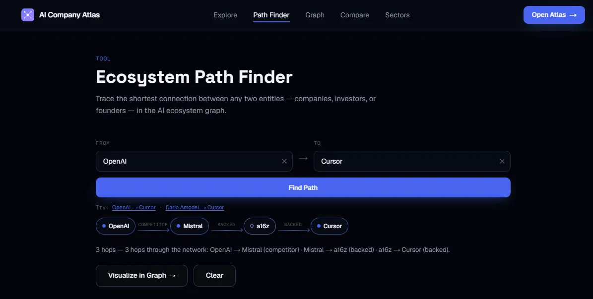
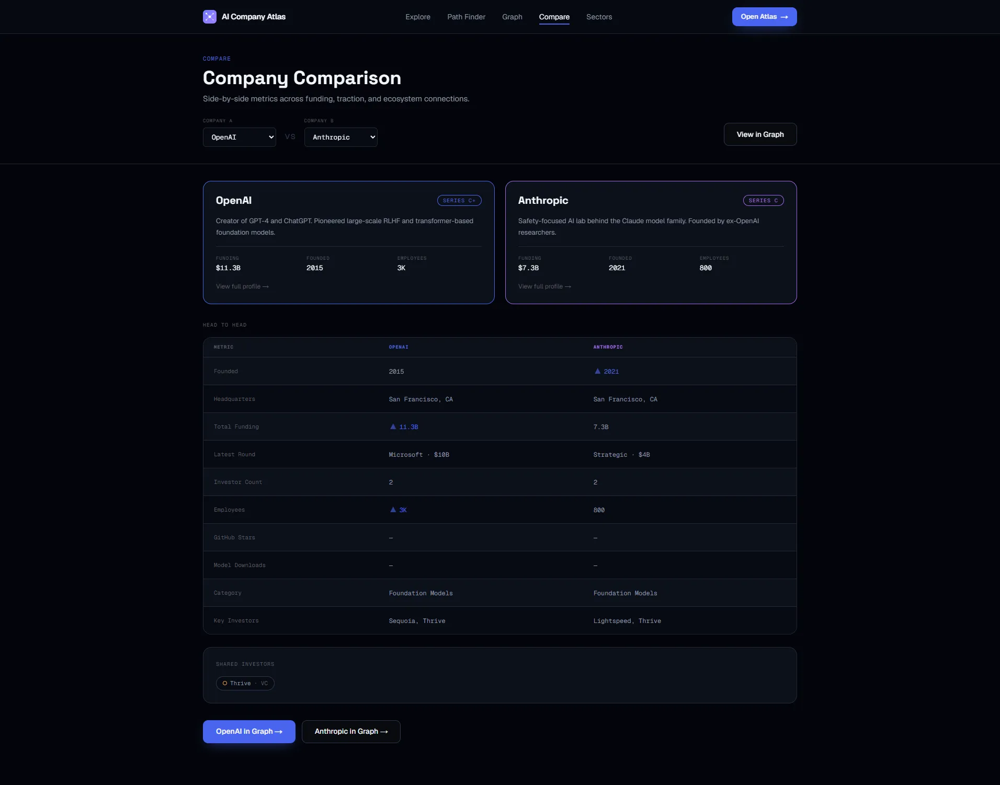
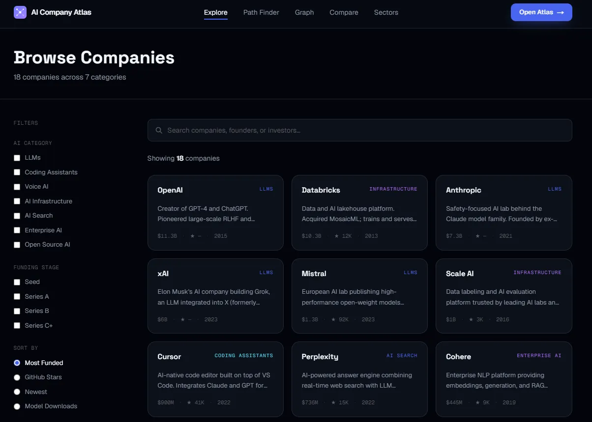
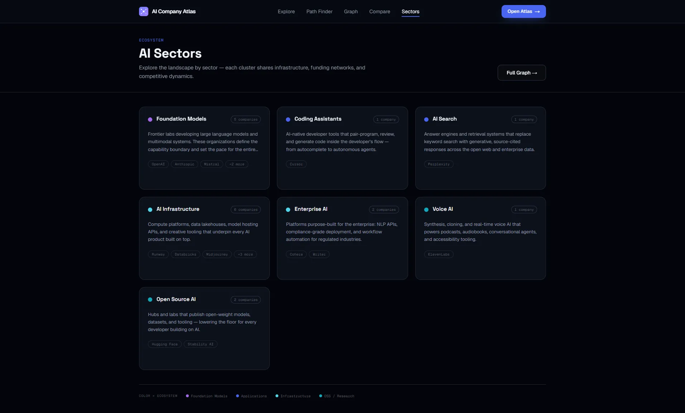
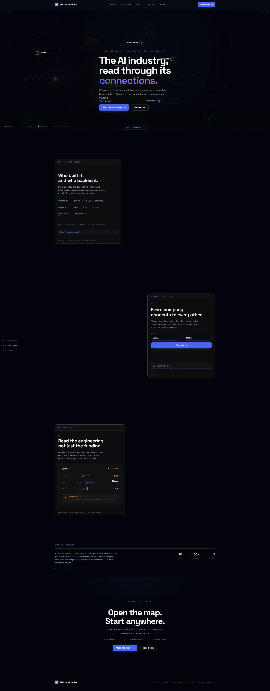
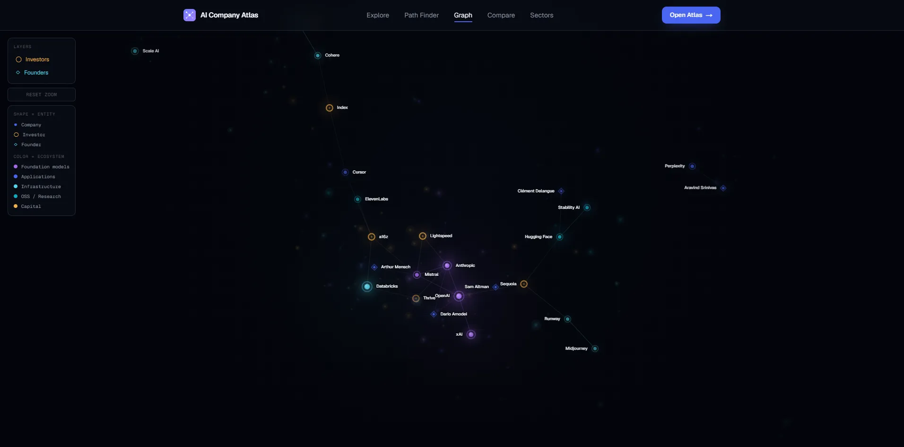
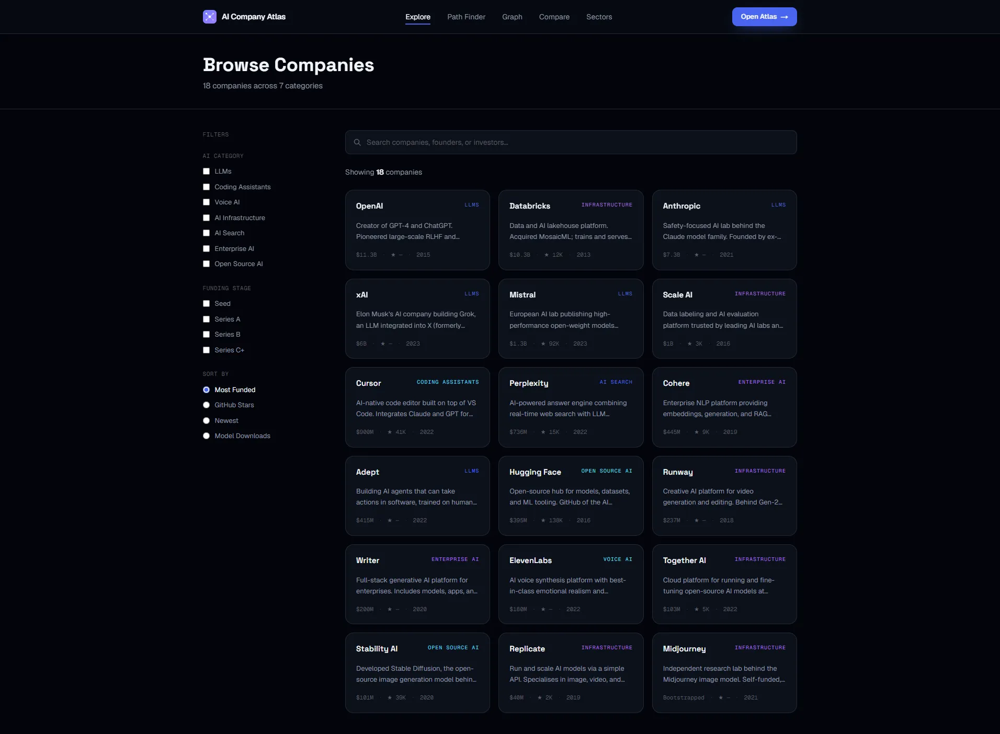

An interactive intelligence platform for exploring AI companies, founders, investors, sectors, funding activity, and technical traction.

AI Company Atlas is a deployed web application that presents the AI industry as a connected ecosystem rather than a list of isolated company profiles. Users can browse AI companies, investigate founders and investors, explore relationships in an interactive graph, trace the shortest path between two entities, compare companies, and browse the industry by sector.
I built the project using an AI-assisted workflow from concept through deployment. My responsibilities included product direction, visual design, implementation planning, reviewing generated changes, testing, refinement, and deployment.
Information about AI companies is spread across company websites, funding databases, GitHub repositories, model platforms, news articles, and industry reports. Traditional company databases are useful for looking up individual organizations, but they often focus primarily on funding and company profiles — they do not always make the relationships between companies, founders, investors, competitors, and technical activity easy to understand.
AI Company Atlas was designed around one question:
How could an interactive application make the AI ecosystem easier to explore as a connected network rather than a collection of isolated records?
The product helps users investigate questions such as:
The product combines company research, ecosystem relationships, and technical-traction signals in one visual experience.
I intentionally developed the frontend and interaction model before creating the production backend. Starting with the user experience helped define what the backend actually needed to support.
Designing the experience first helped define what information the company cards, profiles, graph, comparison tools, and Path Finder needed from the backend.
Before building the production application, I used Claude Design to create and refine the visual system behind AI Company Atlas.
The prototype established:
The Atlas Graph System also served as a developer handoff, documenting how the graph should look, move, and render before it was implemented in the production application.

Claude Design prototype defining the node hierarchy, color language, edge treatment, glow behavior, and Canvas rendering direction for the final product.
After the visual direction was established, I used Claude Code to convert the prototype into a production application. I did not ask Claude Code to generate the entire project through one broad prompt — I separated the work into controlled phases.
I gave Claude Code clear visual references, divided the work into reviewable phases, preserved the approved design direction, and tested each stage before continuing.
AI accelerated implementation, but I remained responsible for product direction, design approval, testing, prioritization, and final quality.
Six connected experiences make up the product, from company discovery to graph-based exploration.
Search and browse AI companies by category, funding stage, and key metrics, then open individual company profiles.
An interactive network showing how companies, founders, and investors are connected.
Finds and explains the shortest connection between two companies, founders, or investors.
Compares two companies across funding, size, technical activity, investors, and shared connections.
Groups companies by specialization and helps users explore the AI ecosystem by category.
Uses refreshed GitHub and Hugging Face data to highlight repository activity and model adoption while keeping the experience fast and reliable.





| Area | Tools |
|---|---|
| Design | Claude Design |
| AI-Assisted Development | Claude Code |
| Application | Next.js, React, TypeScript, Tailwind CSS, Framer Motion |
| Data | Supabase, PostgreSQL |
| Visualization | Canvas 2D, D3 Force |
| APIs & Deployment | GitHub API, Hugging Face API, Git, GitHub, Vercel |
GitHub and Hugging Face APIs provide technical-traction signals such as repository activity and model adoption. Instead of requesting this data whenever a page loads, refreshed metrics are stored in Supabase so the application remains fast and reliable.
External metrics are refreshed and stored in Supabase, while the application reads structured data through the application data layer.
A key challenge was preventing the production implementation from drifting away from the approved visual direction. I used the prototype as a fixed reference and gave Claude Code focused instructions to preserve the layout, interaction style, and visual identity.
The original prototype was primarily visual. The production version needed connected company, founder, investor, funding, and metric data that could support profiles, comparisons, graph exploration, and Path Finder.
The graph and responsive layouts required repeated testing because they combined animation, labels, connections, navigation, and user interaction. I refined performance, spacing, alignment, and mobile behavior through targeted revisions.
I tested navigation, company discovery, profiles, graph interactions, Path Finder, comparison tools, sector browsing, responsive layouts, and production deployment.
Identified issues were corrected through focused prompts and retesting.
To review the finished application more systematically, I created two custom Claude agents:
Engineering quality, performance, security, accessibility, and maintainability review.
Metadata, semantic structure, social sharing, sitemap, robots, and crawlability review.
I gave each agent a focused role and persistent project context so it could avoid repeating resolved issues and distinguish intentional decisions from genuine problems.
The agents did not apply changes automatically. I reviewed and prioritized their findings, requested targeted fixes, and retested the application before accepting changes.
The completed application is publicly accessible and does not require an account.
It includes:
The final result demonstrates how AI-assisted implementation, custom agents, human review, and a modern product stack can work together in a controlled development workflow.



AI Company Atlas gave me practical experience taking a software product through the complete delivery process.
Turning product goals and requirements into clear, reviewable implementation phases.
Creating a visual system and keeping the production implementation aligned with it.
Connecting the frontend, backend, APIs, testing, and deployment into one complete product.
Creating specialized agents while keeping final decisions, prioritization, and approval human-led.